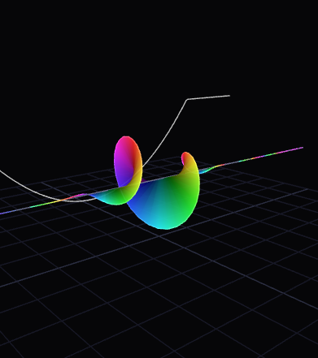

01 / What is a wavefunction?
A wavefunction, written ψ (psi), represents a quantum state in a chosen description. For a single non-relativistic particle in one dimension, ψ(x,t) is generally a complex-valued function of position and time. Its amplitude and phase carry information used to predict measurement outcomes.
The quantity |ψ(x,t)|² is the probability density for position. For a normalized state, integrating this density over a region gives the probability of finding the particle in that region. The wavefunction itself is not simply a tiny material wave sloshing through space; it is a quantum-state description whose measurable predictions follow from the theory.

Amplitude is not probability
For a complex wavefunction, ψ can contain real and imaginary components. Probability density is the squared magnitude, ψ*ψ, not the signed value of ψ. A negative or complex amplitude can still contribute a non-negative probability density.
02 / Time evolution: the Schrödinger equation
The time-dependent Schrödinger equation specifies how a quantum state evolves when its Hamiltonian—the operator associated with total energy—is known.
For a particle of mass m moving in a potential V(x,t), the one-dimensional form is
The second spatial derivative describes the kinetic-energy contribution, while the potential term describes the environment. Boundary conditions and the potential shape determine which states are allowed and how they change over time.
.png)
03 / States, nodes, and interference
Quantum states can combine through superposition. If ψ₁ and ψ₂ are possible state amplitudes, a linear combination can be another valid state (subject to normalization and the physical setup). Their amplitudes add first; probabilities are calculated afterward. This is why interference can strengthen the probability in some regions and suppress it in others.
.png)
.png)
A node is a location where the wavefunction vanishes. In a stationary state, nodes can reveal important structure about the state. In bound systems, energy quantization arises from the Hamiltonian together with the physical constraints and boundary conditions—not from the drawing of a wave alone.
04 / From ψ to a measurement
The Born rule connects the state to the statistics of measurements. In position space, the probability of detecting a particle between a and b is
For a continuous position variable, |ψ|² is a density, so the probability at one exact point is not obtained by reading the curve height as a point probability. Instead, integrate over a finite interval. The wavefunction must also be normalized (or appropriately treated as a generalized state) for predictions to be meaningful.
.png)
05 / How to read the visualizations
- Check the plotted quantity. A curve labelled ψ may show an amplitude; a curve labelled |ψ|² shows probability density. They are not interchangeable.
- Look for axes and units. A schematic surface may communicate shape without representing a calibrated physical measurement.
- Distinguish a state from its measurement. The wavefunction predicts outcome distributions; an individual measurement returns a particular result.
- Keep the model in context. The equations above describe non-relativistic quantum mechanics. More advanced systems can require different frameworks.
Further exploration
This note accompanies the Schrödinger wavefunction project. Return to the project page to explore the implementation and its visual model.
OPEN SCHRÖDINGER PROJECT ↗